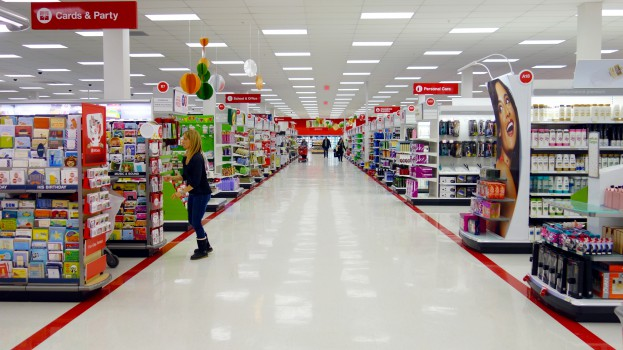
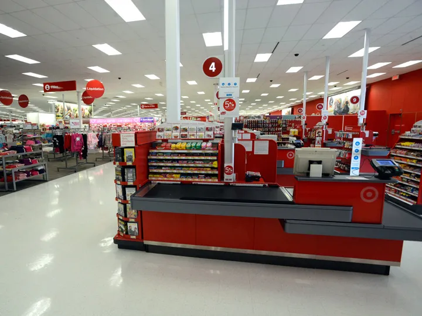

Portfolio




I am a dedicated and ambitious person currently pursuing a full-time education at the University of California, Riverside (UCR). Alongside my academic journey, I have also established myself as a valuable asset in the retail industry, holding a position as a cashier at Target. With a keen understanding of customer service and a knack for thriving in fast-paced environments, I consistently deliver exceptional performance. Additionally, I have taken on additional responsibilities, ensuring the smooth operations of the store and showcasing my versatility and commitment to excellence.
Beyond my role in the retail industry, I am deeply passionate about education and community engagement. I devote my time and efforts as a volunteer teacher's assistant, providing invaluable support to both kindergartners and middle schoolers. Through my patient and nurturing approach, I foster a love for learning and empower students to reach their full potential. My exceptional communication skills, adaptability, and ability to connect with diverse age groups have made me an invaluable mentor and role model within the classroom setting.
One of the standout qualities that sets me apart is my outstanding time management and organizational skills. Balancing the demands of being a full-time student, a cashier, and a volunteer demonstrates my ability to prioritize tasks effectively and excel in various roles. With an unwavering work ethic, I consistently deliver results and approach every endeavor with enthusiasm and dedication. As I continue my academic journey, I am poised to leverage my diverse experiences and passion for personal and professional growth to make a meaningful impact in my future career.
In summary, I am a driven and dedicated individual currently pursuing my education at UCR while concurrently excelling in my role as a cashier at Target. My commitment to excellence, versatility, and exceptional time management skills reflect my ability to thrive in multiple domains. Through my volunteer work as a teacher's assistant, I demonstrate a deep passion for education and community enrichment. With a bright future ahead, I am poised to make a significant contribution to my chosen field, armed with my unique experiences and unwavering determination.
• Answer incoming phone calls and respond to customer inquiries, providing information about products, services, and pricing.
• Schedule appointments for customers to visit the store or meet with sales representatives.
• Coordinate and schedule deliveries, working closely with customers and delivery personnel to ensure timely and efficient service.
• Responsible for checking out customers
• Handle cash transactions, including counting cash, giving change, and processing credit/debit card payments.
• Help prepare instructional materials, such as worksheets, lesson plans, and visual aids.br>
• Assist with grading assignments and providing feedback to students.
• Help students with tasks such as reading, writing, math, or other subject-specific activities.
• Provide one-on-one or small group support to students, offering extra help and guidance as needed.